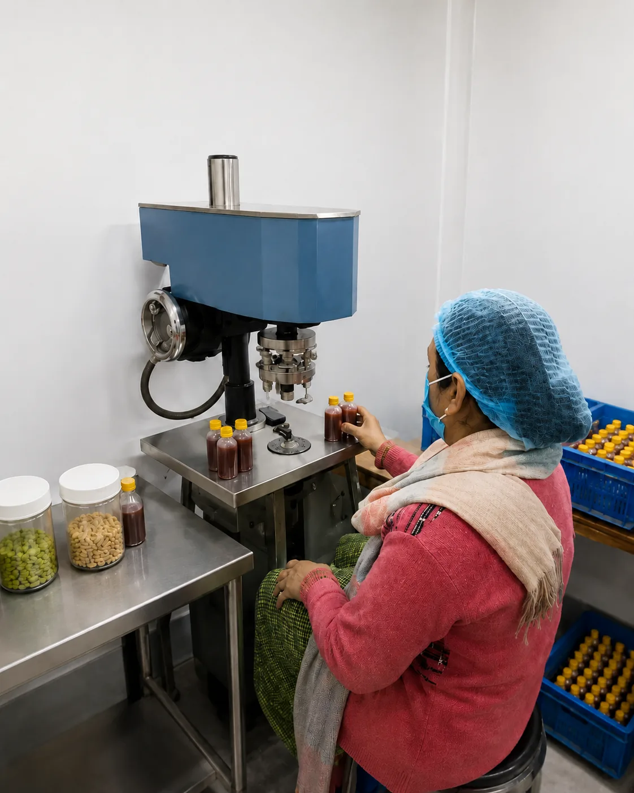
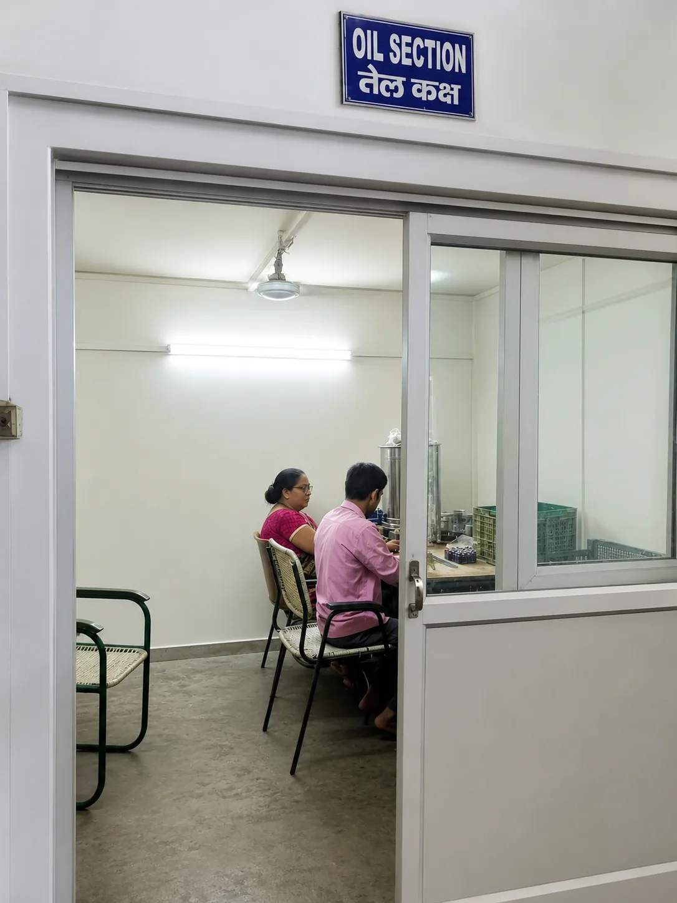
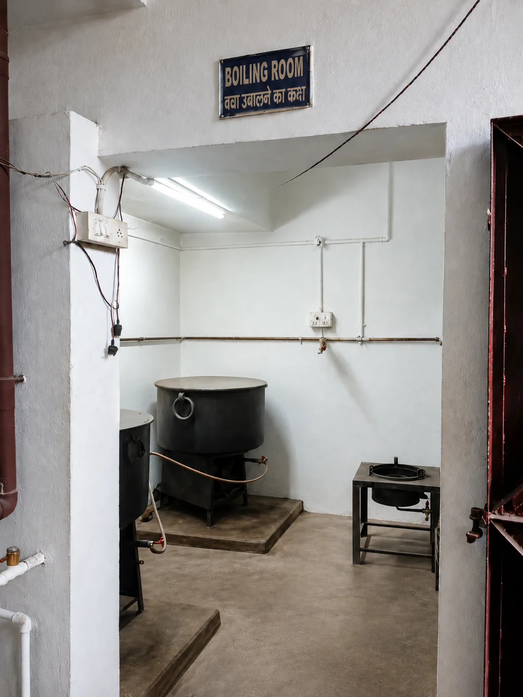
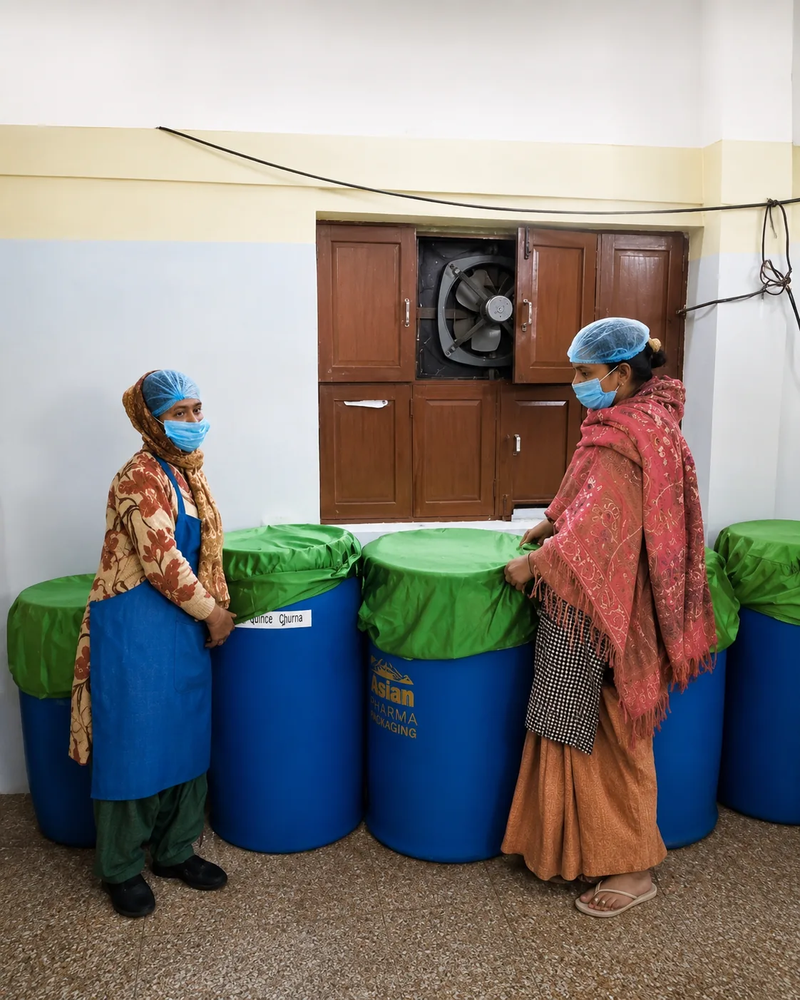
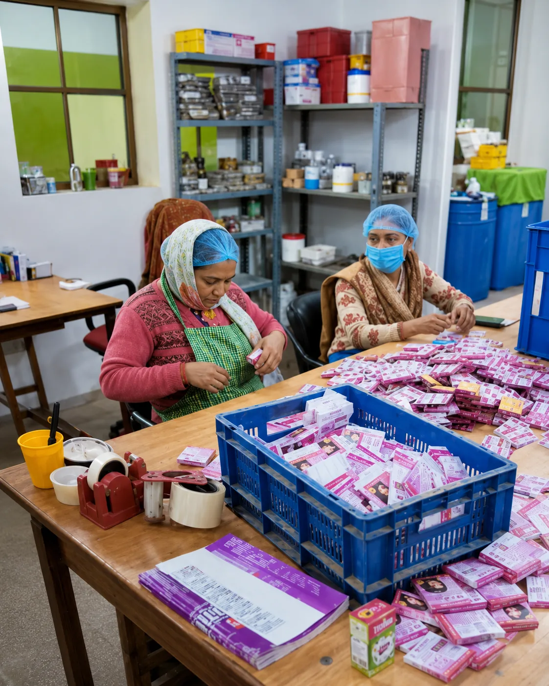

Dependable Portfolio
A focused range across everyday Ayurvedic healthcare needs.
Our company
Decades of Ayurvedic formulation experience, responsible manufacturing, and dependable partnership.
Our story
Quality Pharmaceuticals is a licensed, GMP-certified Ayurvedic medicine manufacturer based in Jajmau, Kanpur. Since 1967, we have developed a focused range of syrups, tonics, tablets, capsules, oils, ointments, drops, gripe water, and churan.
Our work is guided by responsible manufacturing, dependable quality, accessible pricing, and long-term relationships with the people who recommend and distribute our products.
Company Founded
Expanded into Ayurvedic and pharmaceutical products
Diversified portfolio with new syrups, capsules, tablets, oils, ointments and drops
Modernized manufacturing and quality control to meet evolving regulatory standards
20+ trusted products with an expanding distribution network across India

Built for long-term relationships
Clear communication, dependable products, and a heritage of serving healthcare businesses.
A focused range across everyday Ayurvedic healthcare needs.
Direct support for product, availability, and distribution enquiries.
GMP, manufacturing licence, and GST details presented clearly.
Our premises & processes
Authentic views of our manufacturing premises, quality-control work, preparation, filling, and packing operations.







Verified credentials
Essential company and manufacturing details, presented clearly for customers and partners.
Registration details for straightforward verification.
Production practices focused on hygiene, consistency, and quality.
Decades of experience in Ayurvedic healthcare products.